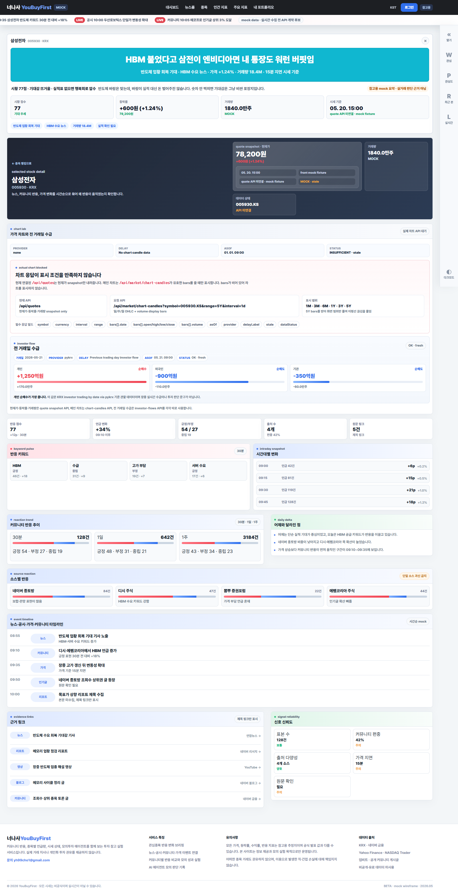
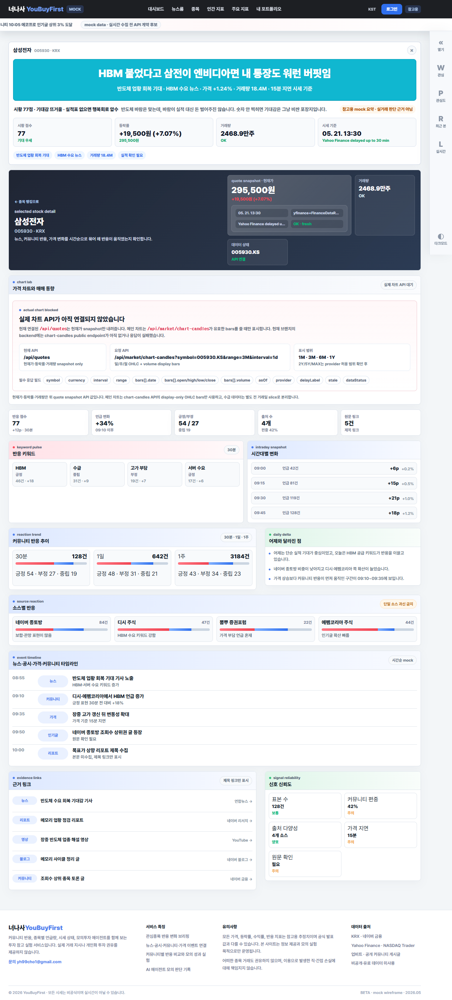

2026-05-22

최신 main의 quote snapshot, chart-candles, investor-flows API를 분리 호출하는 종목 상세 대표 기록입니다. 국내 종목은 전 거래일 수급 카드를 표시하고 해외 종목은 숨깁니다.
front/public/visual-history/2026-05-22/
날짜별 대표 화면 캡처를 모아 보는 로컬 갤러리입니다. 평소 에이전트가 읽는 문서가 아니라, 화면 변화가 있을 때 등록하는 기록입니다.

최신 main의 quote snapshot, chart-candles, investor-flows API를 분리 호출하는 종목 상세 대표 기록입니다. 국내 종목은 전 거래일 수급 카드를 표시하고 해외 종목은 숨깁니다.
front/public/visual-history/2026-05-22/

종목 상세 quote snapshot과 chart-candles API 분리 호출을 확인하는 대표 기록입니다.
front/public/visual-history/2026-05-21/

대시보드 개미 심리 지수, 인간 지표, 주요 지표 허브/상세, 종목 랭킹, 내 포트폴리오 개편을 확인하는 대표 기록입니다.
front/public/visual-history/2026-05-20/
종목 상세 TradingView 공개 위젯 비교 기록입니다.
대시보드 외 주요 탭의 정보 밀도 개선과 뉴스룸, 종목 상세 배너 작업 기록입니다.
초기 대시보드 비교용 기준 화면입니다.